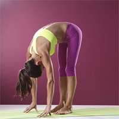

ေျခတံ သြယ္လ် လွပေအာင္

မတ္တပ္ရပ္ အေနအထားကေန ေရွ႕ကို ကုန္းပါ။
ကုန္းေနတုန္း ဒူးကို အနည္းငယ္ ေကြးထားႏုိင္ျပီး ျပီးမွ ျဖည္းျဖည္းျခင္း ျပန္ေျဖာင့္ပါ။
အသက္ ၈ခါေလာက္ ျဖည္းျဖည္းျခင္း ရႈပါ။
ျပီးရင္ေတာ့ ျပန္မတ္ပါ။
၈ ၾကိမ္ေလာက္ျပဳလုပ္ပါ။